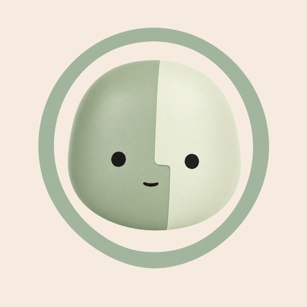

0
· aujourd’hui 0
Calendrier
LMMJVSDScore
Vide Parfait Touche un jour pour le corriger
Évolution
Défis réussis
Tâches
Exclusions
Une habitude exclue sort du score (100 reste atteignable) et sa série est mise en pause.

Chargement…
· aujourd’hui 0
Vide Parfait Touche un jour pour le corriger
Une habitude exclue sort du score (100 reste atteignable) et sa série est mise en pause.